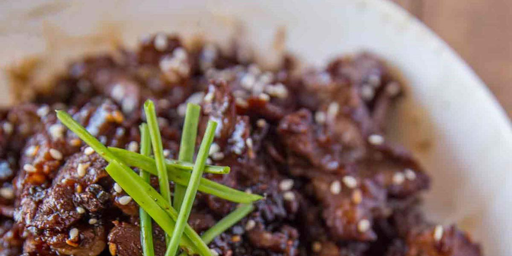

Crispy Beef
Recipe Specification
Ingredients List
| Ingredients | Quantity |
|---|---|
| Minute Steak | 400g |
| Cornflour | 50g |
| Chinese Five Spice | 2 tsp |
| Vegetable Oil | 100ml |
| Red Pepper | 1x1 |
| Spring Onion | 6 stalks |
| Garlic Cloves | 2 Cloves |
| Root Ginger | 1 inch |
| Rice Wine Vinegar | 60 ml |
| Dark Soy Sauce | 15ml |
| Sweet Chilli Sauce | 30g |
| Tomato Ketchup | 30g |
| Sesame Seeds | 30g |
Yield: 4 portions
Preparation
- Thinly slice minute steak.
- Mix cornflour with Chinese five spice and season with salt and pepper.
- Toss sliced steak in cornflour mix.
- Deseed and slice red pepper.
- Thinly slice red chilli.
- Thinly slice spring onion.
- Peel and crush garlic cloves.
- Peel and cut ginger into thin sliced matchsticks.
- Mix vinegar, soy sauce, sweet chilli sauce and ketchup with 30 ml of water.
Cooking Instructions
- Place a wok over a medium/high heat and add vegetable oil.
- Once oil is hot, fry beef until golden brown and crispy.
- Remove 20ml of oil from the wok and add peppers, half the chillies, half the spring onions, crushed garlic and ginger to the pan.
- Stir-fry for 3 minutes. Be sure not to burn garlic.
- Add vinegar and soy mix and cook for 2 minutes.
- Remove from heat and garnish with remaining spring onions, sesame seeds and chillies before serving.

Serving Suggestions
Serve with sticky rice or noodles.
Storing instructions
Allow to cool to room temperature. Consume within 4 days of making. Store in the fridge
Reheating Instructions
Place in the microwave for 1-2 minutes.